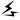

2012/0618Mon164回目*marika
いつも読んでくださってる方、
初めて読んでくださった方、
コメントしてくださった方、
ありがとうございます。
更新遅くなりました。
なかなかまとまらなかった
結局まとまってないけど、
読んでください。
Third選抜発表
初めて選抜メンバーに選ばれました。
素直に嬉しい。
だってずっと
目指してた場所だったから。
放送前日、土曜日の握手会で
みなさんが私の目を見て、
手を強く握ってくださいました。
「どんな結果でも応援するから」
みなさんに支えられているから
私はFirstでもSecondでも
くさらず頑張れたんです。
思ってたこと言わせてください。
アンダーでたくさんのチャンスを
もらいました。
個人pvが好評だったり、
「狼に口笛を」で
良い位置をいただいたり、、
正直浮かれてたことがありました。
だから今回の選抜で少し
期待してた気持ちもあったんです。
でもいざ発表となったとき、
不安になって、
ダメかな。次もアンダーかな。
って。
そうしたら
2番目に私の名前を呼ばれて。
まっしろになって、
涙がぼろぼろこぼれてきて
やっと、
みなさんの期待に
応えられることができた
って。
一緒にいる時間が長かった
ずっと一緒に頑張ってきた
アンダーメンバーのみんな。
呼ばれた時、笑顔でおめでとう
って言ってくれて、嬉しかった。
本当に嬉しかった。
ありがとう。
そして、
いつも応援してくださるみなさん。
First、Secondで呼ばれなかったとき
くさるな！
と言ってくださったみなさん
いつも心優しいみなさん
感謝の気持ちでいっぱいです。
いつもいつもいつも、ありがとう。
見ててください。
万理華はまだまだ成長します。
もっともっと強くなります。
ここから、
また新しい経験をたくさんして
たくさん学びます。
たくさんの人に乃木坂46、
そして伊藤万理華を
知ってもらえるように。
たくさんの人への
感謝の気持ちを忘れない。
初心を忘れない。
笑顔を忘れない！
輝けるように。
坂を上り続けます。
これからも伊藤万理華を
よろしくお願いします!!
だいすきです。
まりか
2012/0616Sat163回目*marika
いつも読んでくださってる方、
初めて読んでくださった方、
コメントしてくださった方、
ありがとうございます‼
個別握手会in幕張メッセ
来てくださった方、
ありがとうございました。
すごく楽しかったー‼
初めての方がたくさん来てくださって
本当に感動してました
いつも来てくださる方も
もっと仲良くなれた気がする♪♪
終わったあと
嬉しくて泣きそうになった><
楽しい時間でした
みなさんに会えて
めっちゃめっちゃ元気になった‼
本当にありがとうございました‼
やっぱりにぎにぎ楽しい

......
今回のしーふく
びっくらしたでしょ
ママが作ってくれたワンピース。
そして実は化粧ポーチも
前から作ってくれてたんだー‼
ワンピースはこの生地が余ってたから
作ってくれたのです。
ポーチはスタッズいっぱい
ちなみに今日のネックレスも
スタッズで合わせてみた。
ワンピースとおそろいの
リバティーの生地で
柄かわいいのよね。星がいっぱい！
チカチカ 笑
笑
笑そんで今日のれいかの私服
めっちゃ好みだったー
かわいかったー
......
もうひとつ注目してほしいのは
初挑戦の髪型‼
いちおう、
テーマは猫ちゃんのつもりで
アイメイクはキャットラインを...
きゅいーんっっっ
したけども髪型に関しては
リボンだという意見が
多かった ちーん
ちーん
ちーんんー...まぁどっちでも...
まりっか♪
では明日も元気に頑張りまりか！
おやすみなさい
まりか
2012/0615Fri162回目*marika
いつも読んでくださってる方、
初めて読んでくださった方、
コメントしてくださった方、
ありがとうございます‼
明日は待ちに待った握手会だぜ
みんな‼


楽しみ、眠れない。
でもね今日は早く寝ます

若月さま
どうだ！みゅみゅのこの自然な笑顔‼
つい最近
「あーまりかいじるの楽しいわ」
というドS発言が出ました
...こわくない。がくがくぶるぶる←
明日の握手会の私服女の子ぽいかも
髪型新しいの挑戦してみたり
しようかと思ってます
にぎにぎ楽しみましょう♪‼
おやすみなさい！
まりか
2012/0614Thu161回目*marika
いつも読んでくださってる方、
初めて読んでくださった方、
コメントしてくださった方、
ありがとうございます‼
「アメイジングスパイダーマン」
24時間応援企画
無事終了しましたーーーーー
見てくださった方、
ありがとうございました♪
ワールドプレミア!!
興奮したー緊張したー

レッドカーペットなんて
ニュースでしか見たことなかったし、
まさか自分が歩いたなんて...!!
うわあああぁわわぁわわわあああ
乃木坂メンバー20人
スパイダーマン柄の浴衣を着ました。
＼じゃーん／
みなさんに浴衣姿初見せだ
今は浴衣持ってないし、
久しぶりに着ました。
髪型も新鮮でしょ ⁇
⁇
⁇映画「アメイジングスパイダーマン」
ひと足先に観させていただきましたが
本当におもしろかった‼
3Dってすごい
スパイダーマンが街中を
飛びまわるシーンは
自分の体も一緒に動いてた
予告編
ワールドプレミアで初めて観て
あーもう一回観たいーーー!!
て思っちゃった
というか観ます。
絶対観ます‼
スパイダーマン123も
また観たいです><
まだまだ話したいけど、
ネタバレになりそうだ。
みなさんもぜひ観てください‼
アメイジング
このことばこれから使ってこう
ではおやすみなさい♪
まりか
2012/0612Tue160回目*marika
いつも読んでくださってる方、
初めて読んでくださった方、
コメントしてくださった方、
ありがとうございます。
こんばんまりか！
「アメイジングスパイダーマン」
24時間応援企画
まだまだお楽しみにー♪♪
★★★
*****HaPPy BirThDAy*****
ゆみ姉♡2012.6.12
ゆみ姉ーーーーーー ♪
♪
♪おめでとうおめでとうおめでとう‼
ちょっかい出したら、
「もーしょーがないなぁー」
てかまってくれる。
クールでさばさばしてるけど、
めちゃくちゃ優しい

ゆみ姉に会いたくなったら
電話するもんね うへ
うへ
うへゆみ姉だいすきー
あいらぶゆみこ
お手紙、プレゼント少しずつですが、
しっかり受け取っています。
みなさんが思っていること、
たくさんきけて嬉しいです。
今日お手紙読みました。
ぽかぽかします
本当にみなさん
ありがとうございます
今週忙しい、頑張る。
みなさん私に元気をいっぱい
ありがとう ‼♪
‼♪
‼♪だいぶ前の写真載せてみる
そして...
伊藤ちゃんず
ではね‼
まりか